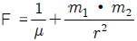
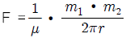
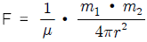
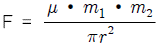
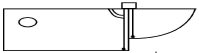
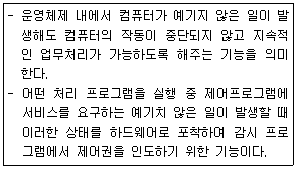

초음파비파괴검사산업기사(구) (2011-08-21 기출문제)
1과목: 초음파탐상시험원리
1. 해당 재질에 대한 음속 보정을 하지 않은 초음파탐상기로 미리 영점조정을 행한 다음 실제의 두께가 10mm인 부위의 알루미늄의 두께를 측정하였더니, 9.4mm로 표시되었다. 동일 조건으로 알루미늄의 다른 부위를 측정하여 28.2mm로 표시되었다면 실제의 두께는 얼마인가?
- 15mm
- 25mm
- 30mm
- 35mm
(정답률: 알수없음)

2. 동일한 1MHz의 탐촉자에서 수신효율이 가장 양호한 것은?
- 공기로 흡음시키는 수정 탐촉자.
- 페놀수지로 흡음시키는 수정 탐촉자.
- 에폭시로 흡음ㅅ히키는 황산리튬 탐촉자
- 페놀수지로 흡음시키는 티탄산바륨 탐촉자
(정답률: 알수없음)
3. 초음파 탐상시험의 원리에 대한 설명으로 옳은 것은?
- 결함위치는 송신된 초음파 펄스가 수신될 때까지의 시간으로부터 구한다.
- 내부에 결함이 있으면 그 곳에서 초음파의 일부가 흡수되어 결함에코가 된다.
- 초음파 탐상에서는 통상 1~5MHz의 연속파의 음파를 탐촉자로부터 시험체로 전파시킨다.
- 초음파 탐상은 초음파의 전파특성을 이용하여 결함의 유무, 존재위치 및 크기를 파괴시험과 병용하는 방법이다.
(정답률: 알수없음)
4. 가늘고 긴 시험체를 길이 방향으로 수직하게 탐상하는 경우 저면에코 다음에 나타나는 에코는 무엇이라 하는가?
- 표면에코
- 측면에코
- 결함에코
- 지연에코
(정답률: 알수없음)
5. 일정한 크기의 탐촉자에서 주파수를 증가시킬 때의 변화로 옳은 것은?
- 음속이 증가한다.
- 분해능이 손상된다.
- 빔 분산각이 증가한다.
- 근거리 음장거리가 증가한다.
(정답률: 알수없음)
6. 초음파 탐상시험시 파장을 변경시키기 위해서는 무엇을 변경시켜야 하는가?
- 주파수
- 펄스반복율
- 공급전압
- 탐촉자의 직경
(정답률: 알수없음)
7. 다음 설명 중 침투탐상시험의 특징이 아닌 것은?
- 미세한 표면불연속의 검출이 가능하다.
- 대형부품의 현장검사가 가능하다.
- 균열이나 불연속의 깊이를 정확하게 측정할 수 있다.
- 제조사가 다른 침투제를 사용할 경우 검출감도가 가감될 수 있다.
(정답률: 알수없음)
8. 재료의 스트레인(strain)측정을 위한 비파괴검사법은?
- AE시험
- 중성자투과검사
- 전자유도시험
- X선 응력측정법
(정답률: 알수없음)
9. 비파괴검사방법 중 탈자가 필요한 검사방법은?
- 초음파탐상검사
- 자분탐상검사
- 침투탐상검사
- 방사선투과검사
(정답률: 알수없음)
10. 굴삭기의 몸체가 용접 구조물로 이루어져 있을 때 몸체에 칠해진 페인트 도막 두께를 측정하고자 한다. 다음 중 가장 적합한 비파괴검사법은?
- 침투탐상시험
- 자분탐상시험
- 방사선투과시험
- 와전류탐상시험
(정답률: 알수없음)
11. 자분탐상검사법에 비하여 자기 센서를 이용한 누설자속탐상법의 장점이라고 볼 수 없는 것은?
- 전기 신호에 의한 자동화가 가능하다.
- 결함의 정량 측정이 가능하다.
- 결함 검출 한계가 적다.
- 객관성 시험이 가능하다.
(정답률: 알수없음)
12. 다음의 비파괴검사법 중 인체의 유해성이 가장 큰 시험법은?
- 자분탐상시험
- 초음파탐상시험
- 방사선투과시험
- 와전류탐상시험
(정답률: 알수없음)
13. 용접부의 초음파탐상에 대한 설명으로 옳은 것은?
- 루트 용입부족의 검출에는 탠덤법이 효과적이다.
- 블로홀의 검출에는 탠덤법과 V투과법이 효과적이다.
- X-개선용접부의 내부 용입부족 검출에는V투과법이 효과적이다.
- X-개선용접부의 내부 용입부족 검출에는 탠덤법이 효과적이다.
(정답률: 알수없음)
14. 다음 중 물질을 투과하는 성질을 갖으며, 방사선투과시험에 사용되는 방사선이 아닌 것은?
- Χ선
- γ선
- β선
- 중성자선
(정답률: 알수없음)
15. 강구조물의 파괴에 대한 설명 중 옳은 것은?
- 지연균열은 반복하중 하에서 어떤 반복회수 후에 생긴다.
- 용접부에 생기는 응력집중은 구조물의 강도를 저하시킨다.
- 응력부식균열은 용접 후 어떤 시간의 경과 후 일어나는 수소에 의한 균열이다.
- 용접결함이 존재하면 그곳에 높은 온도영역이 발생하고 연성파괴 사고의 원인이 되는 것이 있다.
(정답률: 알수없음)
16. 쿨롱의 법칙에서 두 자극 사이에 작용하는 힘(F)을 구하는 식으로 옳은 것은? (단, 자극의 세기는 m1 ,m2 투자율은 μ, 자극간의 간격은 r이다.)




(정답률: 알수없음)
17. 전하(q)가 있을 때 이 전하로부터 거리가 r만큼 떨어진 곳에 같은 크기의 전하에 작용하는 힘(F, 자장의 세기)을 나타낸 관계식은? (단, k는 비례상수이다.)
- F = k(q/r)2
- F = k*q(1/r)2
- F = k(r/q)2
- F = k*r(1/q)2
(정답률: 100%)
18. 누설시험을 국부적 부위에 적용할 때 탐상 감도가 가장 높은 검사법은?
- 진공 시험
- 기포 누설시험
- 질량분석 누설시험
- 압력변환 누설시험
(정답률: 알수없음)
19. 비파괴검사 방법 중 광학, 색채학의 원리를 이용한 검사방법은?
- 누설검사
- 방사선투과검사
- 음향방출검사
- 침투검사
(정답률: 알수없음)
20. 초음파탐상검사의 장점이 아닌 것은?
- 검사자 주변 또는 주변 사람에 대한 장애가 없다.
- 내부결함의 위치, 크기, 방향을 어느 정도 측정할 수 있다.
- 페라이트 함량이 적은 오스테나이트 용접조직 검출 능력이 우수하다.
- 고감도이므로 미세한 결함의 검출과 두꺼운 검사체에 적용이 가능하다.
(정답률: 알수없음)
2과목: 초음파탐상검사
21. CRT 상에 나타난 에코의높이가 CRT 스크린 높이의 50% 일 때 이득 손잡이를 조정하여 6dB를 낮추면 에코 높이는 CRT 스크린 높이의 몇 % 로 낮아지는가?
- 5%
- 12.5%
- 25%
- 50%
(정답률: 알수없음)
22. 초음파 탐상검사시 탐촉자의 진동자 두께와 주파수와의 관계를 옳게 설명한 것은?
- 두께와는 전혀 무관하다.
- 얇을수록 높은 주파수를 발생한다.
- 두꺼울수록 높은 주파수를 발생한다.
- 종파는 두꺼울수록, 횡파는 얇을수록 높은 주파수를 발생한다.
(정답률: 알수없음)
23. 다음 [그림]은 탐촉자의 무엇을 측정하는 것인가?

- 거리
- 감도
- 굴절각
- 분해능
(정답률: 알수없음)
24. 탐상면의 표면거칠기에 영향을 가장 많이 받는 초음파탐상검사법은?
- 수침법
- EMAT법
- 레이저-초음파법
- 직접접촉법
(정답률: 알수없음)
25. 초음파가 어떤 두 매질 내에서 굴절이 일어날 수 있는 필수 조건만으로 옳은 것은?
- 두 매질의 속도와 음향 임피던스가 다를 때
- 1차 매질에서의 입사각이 제 2임계각 이상일 때
- 두 매질의 속도가 다르고 초음파가 경사로 입사할 때
- 1차 매질에 입사하는 음파의 종류가 반드시 종파일 때
(정답률: 알수없음)
26. [그림]과 같이 수침법으로 강재를 경사각 탐상할 때 강재중에 횡파를 굴절각 45°로 전파시키기 위해 입사각을 몇 도로 하면 되는가? (단, Ci는 1480m/s, Cs는 3230m/s이다.) (문제 오류로 복원중입니다. 그림파일이 없습니다. 정확한 내용을 아시는 분께서는 오류신고를 통하여 내용 작성 부탁 드립니다. 정답은 1번입니다.)
- 18.9°
- 24.8°
- 34.6°
- 54.7°
(정답률: 알수없음)
27. 주강품을 초음파 탐상검사할 때 탐상에 어려움이 따르는 가장 큰 문제점은?
- 아주 작은 결정구조이므로
- 불균일한 결함 형상 때문에
- 조대한 결정입자를 가지므로
- 탐상표면과 저면이 평행하므로
(정답률: 알수없음)
28. 다음 중 일반적으로 단조물, 압연물, 압출물 등에 있는 결함들은 어느 방향으로 초음파 탐상검사를 하는 것이 가장 좋은가?
- 구분없이 여러 방향으로
- 단조나 압연의 같은 방향으로
- 단조나 압연방향에 수직 방향으로
- 단조나 압연방향에 45도 각도인 방향으로
(정답률: 90%)
29. 시험체의 양면에 각각 별개의 탐촉자를 사용하여 검사하는 방법은?
- 접촉법
- 투과법
- 판파법
- 표면파법
(정답률: 알수없음)
30. 수직탐상법으로 초음파탐상검사를 할 때 탐상방법과 방향에 관한 설명으로 옳은 것은?
- 결함을 가장 잘 검출하는 방향은 일반적으로 결함의 투영 면적이 최대로 되는 방향이다.
- 단강품에 발생하는 결함은 탐상이 가장 용이한 방향에서 수직탐상만에 의해 모두 검출할 수 있다.
- 초음파의 전파방향에 평행하고, 넓게 퍼져있는 결함일수록 반사에코의 높이가 크게 검출된다.
- 단조재에서는 주조시의 결함이 단조에 의한 소성변형에 따라서 변형하기 때문에 결함의 방향 등은 추정할 수 없다.
(정답률: 알수없음)
31. 탐촉자의 진동자 재질 중 티탄산바륨의 장점이 아닌 것은?
- 좋은 송신 효율을 갖는다
- 파형 변이의 영향을 받지 않는다.
- 불용성이며, 화학적으로 안정하다.
- 100℃까지 온도에 의해 영향을 받지 않는다.
(정답률: 알수없음)
32. 초음파 탐상히험의 DGS 선도란 무엇을 하기 위한 것인가?
- 결함의 크기를 평가하는 방법이다.
- 결함의 위치를 측정하는 방법이다.
- 검사주파수를 결정하는 방법이다.
- 결함의 물거리를 결정하는 방법이다.
(정답률: 알수없음)
33. 경사각탐촉자로 용접부를 검사할 때 경사평행주사 또는 용접선상주사를 하여 최대에코높이가 나타나는 결함은?
- 횡균열
- 슬래그 개재
- 내부의 용입부족
- 개선면에 위치한 융합불량
(정답률: 알수없음)
34. 사각 탐상의 기본주사 방법이 아닌 것은?
- 진자 주사
- 두갈래 주사
- 전후 주사
- 목돌림 주사
(정답률: 알수없음)
35. 다음 중 거리진폭특성(DAC)를 작성하는데 사용할 수 없는 시험편은?
- RB-4
- STB-A2
- STB-G V15-1.4
- ASME 기본교정시험편
(정답률: 알수없음)
36. 대형 구조물의 맞대기 용접부를 사각탐촉자를 사용하여 초음파 탐상검사하는 경우 나타날 수 있는 방해에코(비관련지시)로 가장 거리가 먼 것은?
- 쐐기내에코
- 임상에코(hash)
- 파형변환에코
- 적산효과에코
(정답률: 알수없음)
37. 초음파 탐상기의 기본적 조정법에 관한 설명으로 옳지 않은 것은?
- 게인은 B1을 20% 정도로 하는 것이 원칙이다.
- 시간축의 조정은 주로 평행면의 다중에코로 한다.
- 게인과 시간축 조정 노브를 기준에 맞도록 조정하여야 한다.
- 시간축 관계 조정 노브에는 측정범위와 영점조정이라는 것이 있다.
(정답률: 알수없음)
38. 복원중(문제 오류로 복원중입니다. 정확한 내용을 아시는 분께서는 오류신고를 통하여 내용 작성 부탁 드립니다. 정답은 1번입니다.)
- 복원중(정확한 보기 내용을 아시는분께서는 오류 신고를 통하여 내용 작성부탁 드립니다.)
- 복원중(정확한 보기 내용을 아시는분께서는 오류 신고를 통하여 내용 작성부탁 드립니다.)
- 복원중(정확한 보기 내용을 아시는분께서는 오류 신고를 통하여 내용 작성부탁 드립니다.)
- 복원중(정확한 보기 내용을 아시는분께서는 오류 신고를 통하여 내용 작성부탁 드립니다.)
(정답률: 알수없음)
39. 다음 중 초음파 탐상검사에서 잔류 에코(ghost echo)가 나타날 수 있는 가능성이 가장 큰 경우는?
- 표면이 거친 시험체를 광대역 탐촉자로 시험하는 경우
- 송신부의 펄스전압을 최대로하여 용접부를 탐상하는 경우
- 결정립이 조대한 시험체를 높은 주파수의 탐촉자로 시험하는 경우
- 초음파 감쇠가 적은 시험체를 높은 펄스반복주파수로 시험하는 경우
(정답률: 알수없음)
40. A 스캔 장비의 스크린에서 저면반사파의 강도(음압)를 나타내는 것은?
- 반사파의 폭
- 반사파의 밝기
- 반사파의 거리
- 반사파의 높이
(정답률: 알수없음)
3과목: 초음파탐상관련규격 및 컴퓨터활용
41. 금속재료의 펄스반사법에 따른 초음파 탐상시험방법통칙(KS B 0817)에 의거 초음파 탐상시험을 실시하고 시험의 결과를 평가하는 경우 고려하여야 할 사항에 해당되지 않는 것은?
- 흠집의 에코 높이
- 흠집의 에코 길이
- 흠집의 지시 길이
- 흠집의 지시 높이
(정답률: 알수없음)
42. 강 용접부의 초음파 탐상시험방법(KS B 0896)에 의하여 평판 맞대기 이음 용접부의 경사각 탐상 중 판두께가 40mm를 초과하고 60mm 이하인 경우의 재료에 대한 초음파 탐상방법으로 옳지 않은 것은?
- 굴절각 60°를 사용하여 한 면 양쪽에서 탐상한다.
- 굴절각 70°를 사용하여 한 면 양쪽에서 탐상한다.
- 굴절각 70°를 사용하여 양면 한쪽에서 탐상한다.
- 굴절각 60° 또는 70°를 사용하여 한면 양쪽에서 탐상한다.
(정답률: 알수없음)
43. 압력용기 제작규정(ASME Sec.Ⅷ. Div.1)에 따라 초음파 탐상 결과를 판정하고자 할 때 결함의 길이에 관계없이 불합격 처리되는 결합은?
- 균열
- 기공
- 슬래그
- 블로우홀
(정답률: 알수없음)
44. 보일러 및 압력용기에 대한 초음파 탐상검사(ASME Sec.V.Art.4)에 따라 시험장치의 기능이 적절한지 점검하기 위한 교정의 시기로 적절한 것은?
- 각 검사가 시작되기 직전
- 검사 중 매 4시간마다 실시
- 자동장비의 검사자가 교체되었을 경우
- 각 검사 또는 일련의 검사가 마무리되기 직전
(정답률: 알수없음)
45. 알루미늄의 맞대기 용접부의 초음파 경사각 탐상시험방법(KS B 0897)에서 모재 두께가 30mm일 때 흠의 길이가 9mm 이면 흠의 분류는?
- 1류
- 2류
- 3류
- 4류
(정답률: 알수없음)
46. 강판을 경사각 탐상할 때, ASME Code의 보일러와 압력용기 규격에서 규정한 표준 사양은?
- SA-548
- SA-577
- SE-113
- SE-213
(정답률: 알수없음)
47. 보일러 및 압력용기에 e한 초음파 탐상검사(ASME Sec.V.Art4)에 사용되는 교정시험편은 최소한 어떤 열처리가 행하여진 것을 사용해야 하는가?
- 뜨임(tempering)
- 풀림(annealing)
- 불림(normalizing)
- 담금질(quenching)
(정답률: 알수없음)
48. 보일러 및 압력용기에 사용되어지는 대형 단강품의 초음파탐상시험(ASME Sec.V.Art.23.SA338)에서 입도가 조대한 오스테나이트계 재료를 수직탐상할 때 가장 적합한 탐촉자 주파수는?
- 1MHz
- 2.25MHz
- 5MHz
- 10MHz
(정답률: 알수없음)
49. 보일러 및 압력용기에 대한 초음파 탐상검사(ASME Sec.V.Art4)에 따라 용접부 탐상검사에 경사각 탐촉자를 사용할 때 다음 중 일반적으로 이용되는 경사각이 아닌 것은?
- 30도
- 45도
- 60도
- 70도
(정답률: 알수없음)
50. 강 용접부의 초음파 탐상시험방법(KS B 0896)에서 표준시험편 및 대비 시험편의 적용시 길이이음 용접부의 곡률 반지름이 250mm 미만일 경우 원칙적으로 사용되는 시험편은?
- STB-A2
- STB-G
- RB-4
- RB-A7
(정답률: 알수없음)
51. 강 용접부의 초음파 탐상시험방법(KS B 0896)에 규정된 수직탐상시 거리진폭 특성곡선에 의한 에코 높이 구분선을 작성하지 않아도 되는 빔 노정의 기준은? (단, 사용하는 진동자의 공칭 지름은 25mm이다.)
- 50mm 이하
- 75mm 이하
- 100mm 이하
- 125mm 이하
(정답률: 알수없음)
52. 금속재료의 펄스반사법에 따른 초음파 탐상시험방법통칙(KS B 0817)에 따른 초음파 탐상 장치의 성능 점검에 해당되지 않는 것은?
- 수시 점검
- 일상 점검
- 정기 점검
- 특별 점검
(정답률: 알수없음)
53. 알루미늄의 맞대기 용접부의 초음파 경사각 탐상시험방법(KS B 0897)에 따라 탐상 후 나타나는 흠의 지시 길이 측정에 관한 설명으로 옳지 않은 것은?
- 초음파의 에코를 추정하여 측정한다.
- A종 흠은 비교적 긴 흠으로 보아 10dB drop법을 사용한다.
- B종 및 C종 흠은 지정한 평가 레벨(DAC)drop법을 사용한다.
- A종 및 B종 흠은 비교적 긴 흠으로 보아 6dB drop법을 사용한다.
(정답률: 알수없음)
54. 초음파 탐상 시험용 표준 시험편(KS B 0831)에서 규정하고 있는 A1형 표준 시험편의 주된 사용 목적이 아닌 것은?
- 측정 범위 조정
- 탐상기의 종합 성능 측정
- 경사각 탐촉자의 특성 측정
- 경사각 탐촉자의 입사점 측정
(정답률: 알수없음)
55. ASME Code SA-609에 의하여 주강품을 초음파 탐상시험할 때 옳지 않은 것은?
- 시험감도 설정용 대비시험편의 인공 홈은 60도의 각도를 가진 홈으로 되어있다.
- 저면 반사가 75% 이상 손실을 나타내는 영역은 재점검한다.
- 초음파 탐상 전에 적어도 오스테나이트화 열처리를 하여야한다.
- 교점시 사용하는 시편과 검사 대상체의 표면거칠기에 따른 음향감쇠의 차이를 보정한다.
(정답률: 알수없음)
56. 다음 인터넷 서비스에 대한 설명으로 잘못된 것은?
- telnet : 원격 접속 서비스
- archie : 파일 검색 서비스
- gopher : 메뉴 형식의 정보제공 서비스
- irc : TV시청과 인터넷 정보검색을 동시에 가능하게 하는 서비스
(정답률: 알수없음)
57. 컴퓨터통신 사용에 대한 예절로 가장 부적절한 것은?
- 전문적인 지식은 공유한다.
- 모든 데이터는 여러 사람들과 공유한다.
- 다른 사람의 사생활을 존중한다.
- 잘못된 정보는 공유하지 않는다.
(정답률: 알수없음)
58. 다음 중 바이러스를 예방 또는 치료해주는 프로그램은?
- 메모리 관리 프로그램
- 파일 관리 프로그램
- 백신 프로그램
- 문서편집 프로그램
(정답률: 알수없음)
59. PC 운영체제에 대한 설명으로 틀린 것은?
- 하드웨어와 응용 프로그램간의 인터페이스역할을 한다.
- CPU, 주기억장치, 입출력장치 등의 컴퓨터 자원을 관리한다.
- 컴퓨터 시스템의 전반적인 동작을 제어하는 시스템프로그램의 집합이다.
- 사용자가 작성한 원시프로그램을 기계어로 된 목적프로그램으로 변환한다.
(정답률: 알수없음)
60. 다음이 설명하고 있는 것은?

- Execute cycle
- Indirect cycle
- Interrupt
- Fetch
(정답률: 알수없음)
4과목: 금속재료 및 용접일반
61. 체심입방격자에 관한 특징을 설명한 것 중 틀린 것은?
- 배위수는 8이다.
- 원자충진율은 약 68%이다.
- Cr, Mo, V 등이 이에 해당되는 금속이다.
- 단위격자에 속한 원자수는 총 4개이다.
(정답률: 알수없음)
62. Cu, Sn, 흑연 분말을 적정 혼합하여 소결에 의해 제조한 분말 야금용 합금으로 급유가 곤란한 부분에 사용하는 베어링은?
- 켈맷
- 자마크
- 오일리스베어링
- 베비트 메탈
(정답률: 알수없음)
63. 초경합금의 특성이 아닌 것은?
- 경도가 높다.
- 내마모성 및 압축강도가 높다.
- 고온경도 및 강도가 양호하여 고온에서 변형이 적다.
- 사용목적과 용도에 따라 재질의 종류와 형상이 단순하며, 초경합금으로 SnC가 많이 사용된다.
(정답률: 알수없음)
64. 다음 중 수소저장용 합금의 기능이 아닌 것은?
- 금속의 미분말화 적용
- 수소의 분리 및 정제
- 초탄성 효과의 적용
- 저온, 저압에서의 수소저장
(정답률: 알수없음)
65. 완전 탈산한 강으로 강괴 중앙 상부에 큰 수축관이 발생하여 불순물이 그 부분에 모이는 강괴는?
- 킬드강
- 캡드강
- 림드강
- 세미킬드강
(정답률: 알수없음)
66. 황동의 내식성을 개선하기 위하여 7:3 황동에 주석을 1%정도 첨가한 합금은?
- 톰백
- 니켈 황동
- 네이벌 황동
- 애드미럴티 황동
(정답률: 알수없음)
67. 스테인리스강에 대한 설명으로 옳은 것은?
- 마텐자이트계 스테인리스강은 18%Cr-8%Ni이 대표적이다.
- 페라이트계 스테인리스강은 일반적으로 풀림상태에서 내식성이 가장 나쁘다.
- 오스테나이트계 스테인리스강의 예민화를 방지하기 위해서 탄소함량을 높이는 것이 좋다.
- 오스테나이트계 스테인리스강의 강화는 열처리보다 냉간가공에 의한 것이 효과적이다.
(정답률: 알수없음)
68. 격자결함 중 점결함에 해당 되는 것은?
- 원자공공
- 전위
- 적층결함
- 주조결함
(정답률: 알수없음)
69. Fe-C상태도에 관한 설명으로 옳은 것은?
- δ-ferrite는 면심입방격자 금속이다.
- A0는 순철의 자기 변태점이며, 온도는 약 723℃이다.
- A1는 시멘타이트의 자기 변태점이며 온도는 약 768℃이다.
- 순철의 A3변태점의 온도는 약 910℃ 이며, α⇄γ가 되는 점이다.
(정답률: 알수없음)
70. Mg합금의 특징 중 틀린 것은?
- 비강도가 크다.
- 고온에서 활성이다.
- 상온가공이 가능하다.
- 주조용으로 엘렉트론(Elektron)합금이 있다.
(정답률: 알수없음)
71. 전자 빔 용접에 대한 특징을 설명한 것 중 틀린 것은?
- 에너지를 집중시킬 수 있으므로 고용융 재료의 용접이 가능하다.
- 빔 열원을 이용하므로 용입이 깊은 용접부를 얻는다.
- 용접변형이 적고, 고속 용접이 가능하다.
- 대기와 반응되기 쉬운 활성금속에는 불리하다.
(정답률: 알수없음)
72. 보기와 같이 도시된 필릿 용접기호의 표시 중 틀린 것은?
- Z –목단면적
- n – 용접부 수
- ℓ - 용접 길이(크레이터 제외)
- (e) - 인접한 용접부 간격
(정답률: 알수없음)
73. 알루미늄, 스테인리스강, 구리 및 구리합금 등의 용접에 가장 적합한 용접법은?
- 불활성 가스 금속 아크 용접법
- 서브머지드 아크 용접법
- 탄산가스 아크 용접법
- 테르밋 용접법
(정답률: 알수없음)
74. 탄산가스 아크 용접법의 분류에서 용극식 중 플럭스 와이어 CO2법에 속하지 않은 것은?
- 아코스 아크법
- 텅스텐 아크법
- 퓨즈 아크법
- 유니언 아크법
(정답률: 알수없음)
75. 용접금속 내부에 발생되기 쉽고, 주로 수소가스에 의해 결함이 생기는 것은?
- 기공
- 용입불량
- 오버 랩
- 언더 컷
(정답률: 알수없음)
76. 불활성 가스 금속 아크 용접용 전원으로 가장 적당한 것은?
- 직류역극성
- 직류정극성
- 교류정극성
- 교류역극성
(정답률: 알수없음)
77. 용접부의 풀림 처리에 대한 설명으로 올바른 것은?
- 충격저항이 감소된다.
- 경화부가 더욱 경화된다.
- 잔류응력이 감소된다.
- 취성이 생긴다.
(정답률: 알수없음)
78. 가스용접 시 팁 끝이 순간적으로 막히면 가스의 분출이 나빠지고 토치의 가스 혼합실까지 불꽃이 그대로 도달되어 토치가 빨갛게 달구어지는 현상을 무엇이라고 하는가?
- 역류
- 역화
- 인화
- 점화
(정답률: 알수없음)
79. 다음 겷마 중 구조물에 가장 나쁜 영향을 끼치는 결함은?
- 언더 컷(Under cut)
- 은점(Fish eye)
- 피트(Pit)
- 균열(Crack)
(정답률: 알수없음)
80. 연강 판의 가스용접 시 모재 두께가 3.2mm일 때, 용접봉의 지름을 계산식에 의해 구하면 몇 mm인가?
- 1.0mm
- 1.6mm
- 2.6mm
- 4.0mm
(정답률: 알수없음)
9.4mm : 10mm = 28.2mm : x
x = 30mm
따라서, 실제 두께는 30mm입니다.